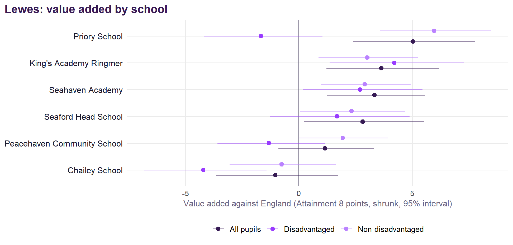
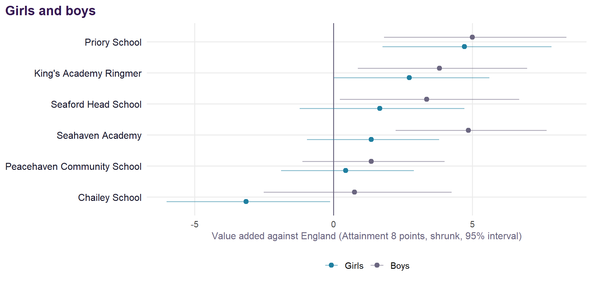
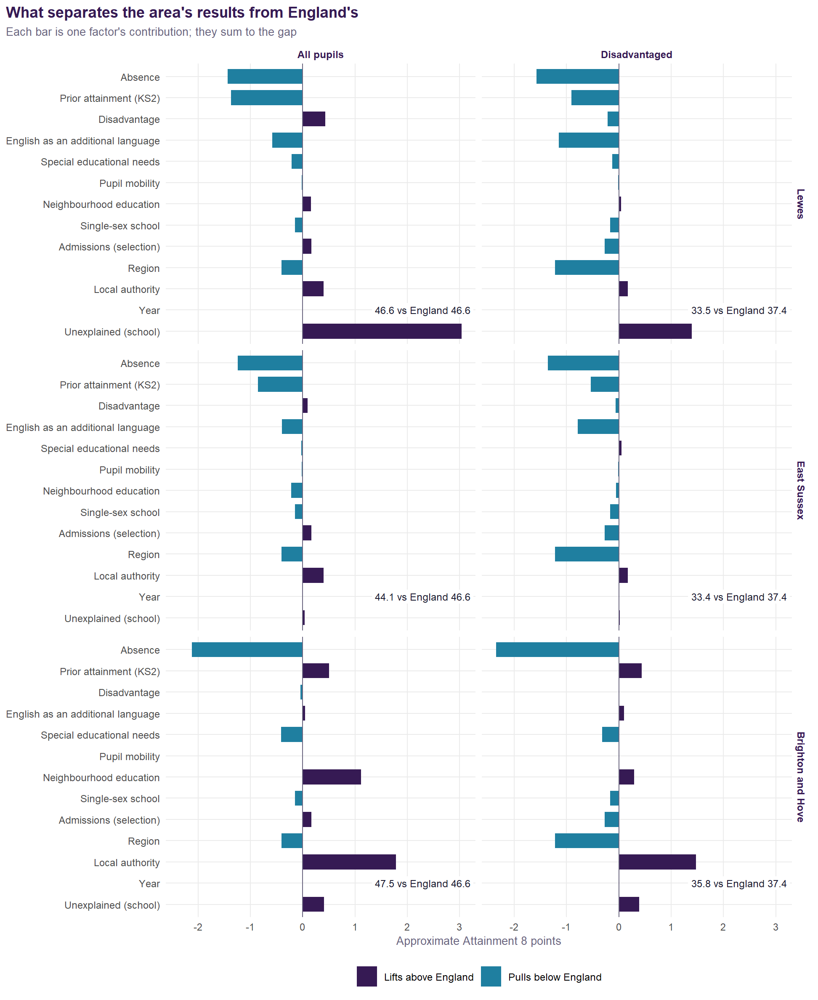

Each school coloured by Value Added v2.0 for all pupils (choose another measure from the menu). Circle size is the school’s roll; hover for every group’s value added, the published v1 figure, and Ofsted.
Lewes
Value Added v2.0 for the secondary schools of Lewes, East Sussex.
NoteAbout this page
Value Added v2.0 for Lewes’s state-funded secondary schools, 2021/22 to 2024/25, measured against England: see the method. The original analysis, with absence, suspensions and trusts in depth, is here. Built from published DfE and Ofsted data; nothing uses pupil-level records.
Summary
- 6 schools with value added for all pupils averaging +2.5 points against England: 4 significantly above significantly above expectation and none below.
- Disadvantaged pupils: +0.2 points; non-disadvantaged pupils: +2.6.
- Girls: +1.3 points; boys: +3.2.
- Strongest: Priory School (+5.0). Weakest: Chailey School (-1.0).
- Against the published v1 measure, the area’s schools move by +0.4 points on average (v2 against England minus v1 within the authority).
- Latest Ofsted: 2 report cards, 1 graded inspection and 3 ungraded visit only.
The schools


| School | District | All pupils | Disadv. | Non-disadv. | Girls | Boys | v1 | Ofsted latest | Run by (2024/25) |
|---|---|---|---|---|---|---|---|---|---|
| Priory School | Lewes | +5.0 (+2.4 to +7.8) | -1.7 | +6.0 | +4.7 | +5.0 | +5.0 | Remains Good (Nov 2023, ungraded visit) | Maintained by the council |
| King's Academy Ringmer | Lewes | +3.6 (+1.2 to +6.2) | +4.2 | +3.0 | +2.7 | +3.8 | +5.3 | Standards maintained (Nov 2024, ungraded visit) | King's Group Academies |
| Seahaven Academy | Lewes | +3.3 (+1.2 to +5.6) | +2.7 | +2.9 | +1.4 | +4.9 | +3.1 | Report card (Nov 2025): achievement Expected standard, curriculum and teaching Expected standard | United Learning Trust |
| Seaford Head School | Lewes | +2.8 (+0.2 to +5.5) | +1.7 | +2.3 | +1.7 | +3.4 | +0.6 | Remains Outstanding (Nov 2023, ungraded visit) | Seaford Learning Trust |
| Peacehaven Community School | Lewes | +1.2 (-0.9 to +3.3) | -1.3 | +1.9 | +0.4 | +1.4 | +0.6 | Good (Oct 2023) | Swale Academies Trust |
| Chailey School | Lewes | -1.0 (-3.6 to +1.7) | -4.2 | -0.8 | -3.1 | +0.8 | -1.1 | Report card (Feb 2026): achievement Expected standard, curriculum and teaching Expected standard | Maintained by the council |
What explains the area’s results

For all pupils, Lewes’s two largest pieces are absence (-1.4) and prior attainment (KS2) (-1.4), and its schools themselves account for +3.1 points. For disadvantaged pupils the two largest are absence (-1.6) and region (-1.2), and the schools +1.4.
Notes on method
Value added v2.0 is described on the method page. School districts come from each school’s postcode. The decomposition splits each area’s mean log Attainment 8 against England’s into one piece per model term, exactly, and converts to points at England’s mean. This page is generated from templates/area.qmd by R/03_area_pages.R.